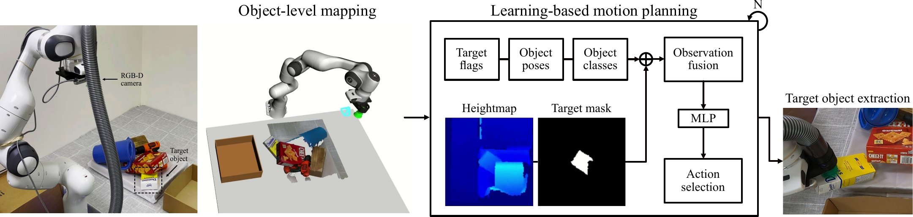
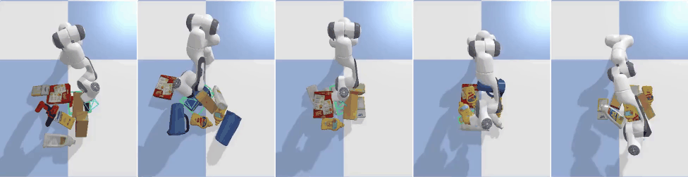
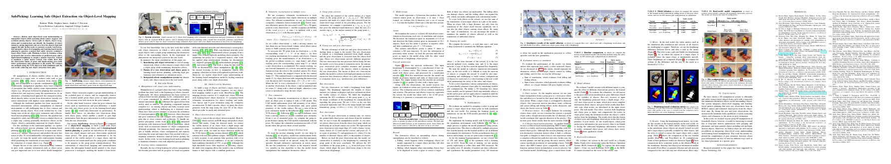

SafePicking
Learning Safe Object Extraction via Object-Level Mapping
Robots need object-level scene understanding to manipulate objects while reasoning about contact, support, and occlusion among objects. Given a pile of objects, object recognition and reconstruction can identify the boundary of object instances, giving important cues as to how the objects form and support the pile.
In this paper, we present a system, SafePicking, that integrates object-level mapping and learning-based motion planning to generate a motion that safely extracts occluded target objects from a pile. We train a deep Q-network to maximize a safety metric reward for motion generation with feeding as input estimated object poses and a depth-based heightmap.
Overview Video (with audio)
Pipeline for object mapping and extraction
We present a pipeline that finds target objects and extract them from a cluttered environment such as an object pile. This pipeline consists of 1) object-level mapping with volumetric reconstruction and pose estimation of detected objects with an on-board RGB-D camera, and 2) learning-based motion planning with a model that recursively generates end-effector relative motions using estimated object poses and a raw depth observation in the form of a heightmap.
Network model for motion generation
We train a deep Q-network using a "safety metric reward" during object extraction. The network model receives fused observations of a depth-based heightmap and estimated object poses to achieve high levels of success with object pose and robustness to estimation errors with the raw depth observation. We feed end-effector relative transformations as evaluation actions, from which the best-scored action is selected as the next action.
Training in simulation
We train the model in physics simulation using the CAD models of known objects. The safety metric reward is computed as the sum of the translations of objects in a pile, which incorporates undesirable consequences such as dropping and sliding.
Baseline comparison in safe object extraction
Our proposed method, SafePicking, surpasses all of the baseline methods: Naive, joint interpolation to a reset pose; Heuristic, a straight motion to lift a grasped object up; RRT-Connect, motion planning using ground-truth object poses.
| Method | Observation | Safety metric | |
|---|---|---|---|
| translation↓ | velocity↓ | ||
| Naive | - | 0.701 | 1.919 |
| Heuristic | - | 0.578 | 1.624 |
| RRT-Connect | pose | 0.520 | 1.643 |
| SafePicking | pose, heightmap | 0.465 | 1.419 |
Model comparison using different observations as input
Our proposed model shows the best result when given both object poses and a raw depth observation as input. The pose information enables the model to generate better motions using more complete semantic information, and the raw depth information enables it to be robust to estimation errors (pose errors; mis-detection) as a less processed scene observation.
| Model variant | Observation | Errors in object poses |
Safety metric | |
|---|---|---|---|---|
| translation↓ | velocity↓ | |||
| Raw-only | heightmap | no | 0.507 | 1.491 |
| Pose-only | pose | 0.477 | 1.430 | |
| Pose+Raw | pose, heightmap | 0.465 | 1.419 | |
| Pose-only | pose | yes | 0.487 | 1.449 |
| Pose+Raw | pose, heightmap | 0.465 | 1.433 | |

Real-world experiments
Learned model ablation

Adaptation to pile changes

Paper
Bibtex
@inproceedings{Wada:etal:ICRA2022a,
title={{SafePicking}: Learning Safe Object Extraction via Object-Level Mapping},
author={Kentaro Wada and Stephen James and Andrew J. Davison},
booktitle={IEEE International Conference on Robotics and Automation (ICRA)},
year={2022},
}
Contact
If you have any questions, please feel free to contact Kentaro Wada.